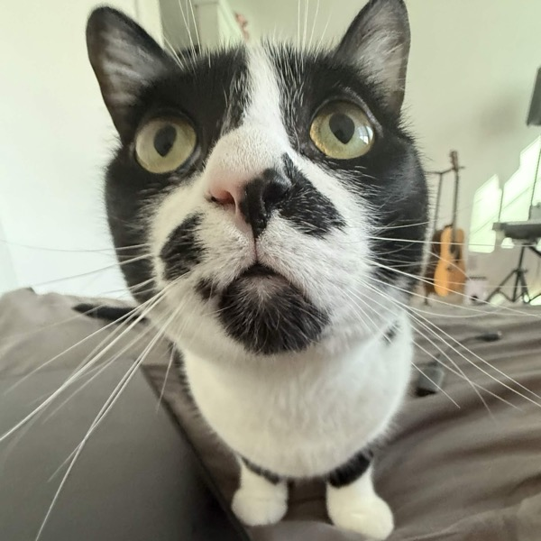

I leverage computational models of the brain for non-invasive neural control. More broadly, I want to understand how brains and machines perceive the world, and what each can teach us about the other.
I am actively seeking machine learning internships for Summer and/or Fall 2027.
About
I am currently a fourth-year Ph.D. student in the Machine Learning program @ Georgia Tech, where I work with Ratan Murty. I obtained my undergraduate degree in Computer Science from The Ohio State University in 2023, where I worked with the OSU NLP group.
Much of my work has focused on computational models of human vision. Specifically, I am interested in where they match the brain, where they are misaligned, and what we can learn from that misalignment.
Some related things I am working on:
- the geometry of visual invariances in models and brains.
- how the statistics of training data shape DNN-brain alignment.
- AI agents and RSI for designing experiments and improving models (and running some fun fMRI experiments!).
Lately, I have been learning more about AI agents, safety, and interpretability and will be sharing some thoughts along the way as I learn! [blog]
Papers
- McNeal N., Ratan Murty N.A. Targeted perturbations reveal brain-like local coding axes in robustified, but not standard, ANN-based encoding models. arXiv preprint, 2025. [paper]
- McNeal N.*, Deb M.*, Ratan Murty N.A. Small-scale adversarial perturbations expose differences between predictive encoding models of human fMRI responses. NeurIPS 2024 Workshop on Unifying Representations in Neural Models (UniReps), 2024. [paper]
- Dipani A.*, McNeal N.*, Ratan Murty N.A. Linking faces to social cognition: The temporal pole as a potential social switch. PNAS (Commentary), 2024. [paper]
- McNeal N., Huang J., Umoren A., Dai S., Dannenberg R., Randall R., Lee T.S. Relating Human Perception of Musicality to Prediction in a Predictive Coding Model. arXiv preprint, 2023. [paper] [code]
- Gutiérrez B., McNeal N., Washington C., Chen Y., Li L., Sun H., Su Y. Thinking about GPT-3 In-Context Learning for Biomedical IE? Think Again. EMNLP (Findings), 2022. [paper] [code]
* denotes equal contribution
Presentations
- McNeal N., Ratan Murty N.A. Robustness aligns the local coding axes of artificial and biological vision. Vision Sciences Society (VSS), 2026. St. Pete Beach, Florida. Talk.
- McNeal N., Deb M., Ratan Murty N.A. Small-scale adversarial perturbations expose key differences between ANN-based vision encoding models. Vision Sciences Society (VSS), 2025. St. Pete Beach, Florida. Poster. [abstract]
- Shanahan D., Kang J., McNeal N. Understanding the Role of Schematic Knowledge in the Preference for Harmonic Asymmetry with Iterative Learning. International Conference on Music Perception and Cognition (ICMPC), 2023. Tokyo, Japan. Talk.
- McNeal N., Kang J., Hay N., Shanahan D. Iterative learning suggests a preference for harmonic asymmetry. Society for Music Perception and Cognition (SMPC), 2022. Portland, Oregon. Talk.
- McNeal N., Shevlin B., Krajbich I. What causes enhanced processing of high-value items? Cognitive Science Society (CogSci), 2022. Toronto, Canada. Poster. [poster]
- McNeal N., Umoren A., Huang J., Lee T.S. Unsupervised Musicality Prediction of Pitch Sequences. CMU-Pitt Undergraduate Program in Neural Computation, 2021. Pittsburgh, Pennsylvania. Poster. [poster]
- Umoren A., McNeal N., Lee T.S. Probing PredNet's Internal Representations using Feature Visualization. CMU-Pitt Undergraduate Program in Neural Computation, 2021. Pittsburgh, Pennsylvania. Poster. [poster]
Teaching
TA @ Georgia Tech
- Spring 2026 MATH 2106 Foundations of Mathematical Proof
- Fall 2025 MATH 1712 Survey of Calculus
- Fall 2023 – Spring 2025 MATH 2552 Differential Equations [notes]
TA @ Ohio State
- Spring 2023 MATH 4350 Quantitative Neuroscience
Mentorship
Undergraduate Students Advised
- Spring 2026 – present Shreyas Angadi
Directed Reading Program
The Directed Reading Program is a program in the Math department that pairs interested undergraduates with graduate students for independent study projects. I have served as a mentor for the following semesters:
- Spring 2024 Introduction to Machine Learning
- Fall 2023 Machine Learning for Modeling Dynamical Systems
Updates
- [2026] Gave a talk at VSS 2026!
- [2025] Presented at the departmental Brown Bag. [slides]
- [2025] Received the best poster award at the Georgia Tech Frontiers in Science (Intelligence) conference!
- [2025] Presented a poster at VSS 2025.
- [2023] OSU CSE Undergraduate Research Award
- [2021] OSU Undergraduate Research Scholarship
- [2021] OSU Decision Sciences Collaborative Scholarship
- [2019] Eminence Fellowship (now Stamps Eminence Scholarship)
Contact
Email: nikolas [at] gatech [dot] edu
Office: JS Coon B79
Address: 654 Cherry St NW, Atlanta, GA 30332
